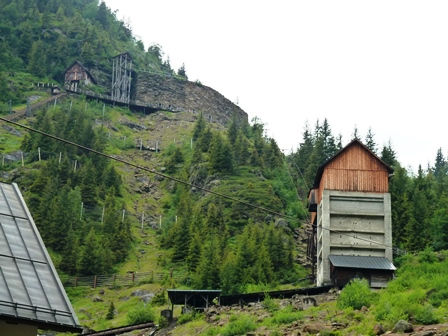
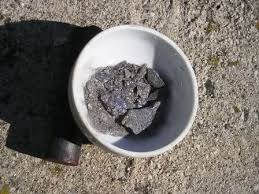
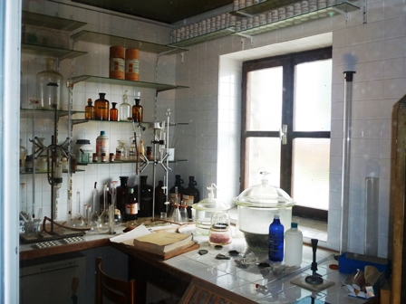

Eccoci finalmente alla Miniera di Monteneve, Val Ridanna, Sud Tirol.
Bella esperienza, molto didattica (nel senso più positivo del termine), assolutamente da non perdere per chi è appassionato anche di queste cose.
In rete si trova tutto ciò che si vuole su questa famosissima e storica miniera di blenda e galena argentifera (link), quindi dirò solo qualche impressione di visita, che comunque non renderà minimamente idea di ciò che si gode partecipando ai tour proposti e organizzati in maniera impeccabile dalla locale direzione dei Musei Provinciali Altoatesini.

La foto mostra la bellissima uno dei tanti scorci della miniera all'arrivo.
la miniera si trova in tutt'altra zona, lontanissima da qui.
Una giornata intera, con guida ed immersione totale (è proprio il caso di dire!) nelle viscere della terra...
Tutto il programma è estremamente interessante, dalla visita del museo minerario, alla galleria didattica, agli impianti di arricchimento del minerale e all'ambiente di alta montagna (la miniera è/era fra le più alte d'Europa).
Le opere di trasporto del minerale dalla zona di scavo hanno semplicemente dell'incredibile e la mia descrizione non ne renderebbe minimamente giustizia, quindi non la tento nemmeno.
Bisogna vedere sul posto, studiandosi la mappa della zona per rendersene conto, e poi ragionare sull'ingegnosissimo sistema a contrappesi e piani inclinati, che erano i più lunghi del mondo.
Il momento clou della giornata per il visitatore è il trasporto alla base della zona di scavo, prima con un pullmino e poi con il trenino elettrico originale dei minatori, inoltrandosi nel cuore della montagna a circa 2000 metri.
L'estensione delle gallerie, che si svolge su una infinità labirintica di livelli, è semplicemente pazzesca (circa 150 Km!), dei quali ovviamente pochissimi sono messi in sicurezza e visitabili, ma più che sufficienti a rendere un'idea esatta delle condizioni di vita e lavoro dei minatori in un posto simile.
Tale lavoro si è protratto per circa 800 anni, con attrezzi che partono dai classici punta e mazzetta e terminano con le perforatrici pneumatiche, immersi, a seconda dl periodo, o nell'acqua, o nel fango o nella polvere.
Come in quasi tutte le miniere si dirà... ma qui c'è la localizzazione del sito a rendere la faccenda tutta un'altra cosa!
La situazione logistica e umana, nemmeno questa descrivibile senza cadere nel banale, è quella che rimane più impressa anche in un osservatore essenzialmente "tecnico" e la si porta a casa come principale ricordo.
Ecco quello che sono riuscito a "scavare" dopo una gragnuola di martellate in uno gneiss compatto e durissimo: uno sputo di blenda/galena polverizzato, souvenir che mi son portato via per eseguirvi i test per l'argento, per soddisfare la mia solita curiosità chimica.
Ho preso il minerale da una venetta nella roccia di una galleria, non nelle discariche (troppo facile...!).
Dalla galena argentifera di questa miniera veniva estratto, oltre al piombo, l'argento per la coniazione delle monete tirolesi, dal 1200 in poi. Solo da fine '800 al 1980 si è cominciato a sfruttare la blenda per l'estrazione dello zinco.

Metto anche una foto che sta bene in questo blog: uno scorcio del delizioso laboratorietto chimico (che gioia per gli occhi: nemmeno un apparecchio "con la spina", solo becker, bunsen, burette e tanti reattivi!) .

Alla fine della giornata, tra le varie considerazioni che si fanno in macchina al ritorno, a tutti noi è venuto spontaneo un interessante paragone sociologico, se così vogliamo chiamarlo.
Naturalmente il paragone è da fare in senso lato, con le dovute proporzioni e gli ovvii distinguo: la miniera, che ora altro non è se non un reperto archeologico industriale, è come l'abbiamo trovata, perfettamente salvata dall'incuria e da tutto il resto, con un'organizzazione di visita efficiente.
E alla fin fine non si tratta che di una vecchia miniera.
Il fatto è che il nostro gruppo aveva visitato (in diverse occasioni) anche Pompei...
Non riporto i commenti.